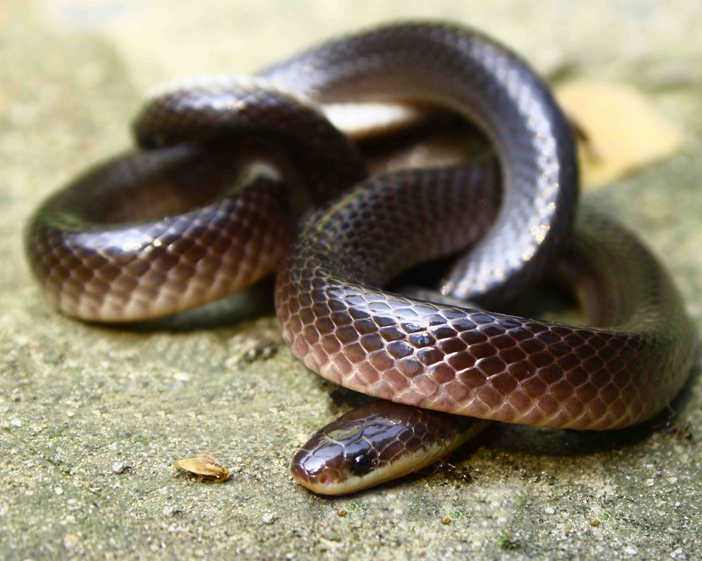
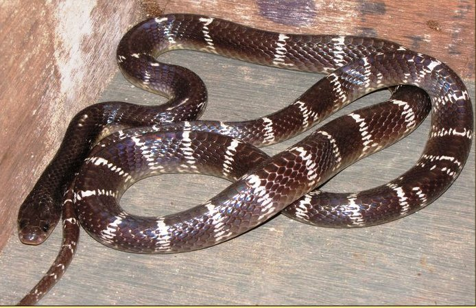
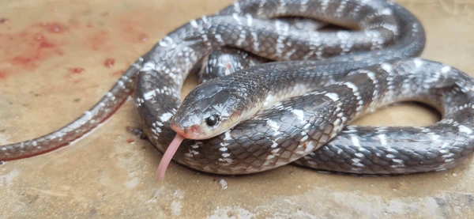
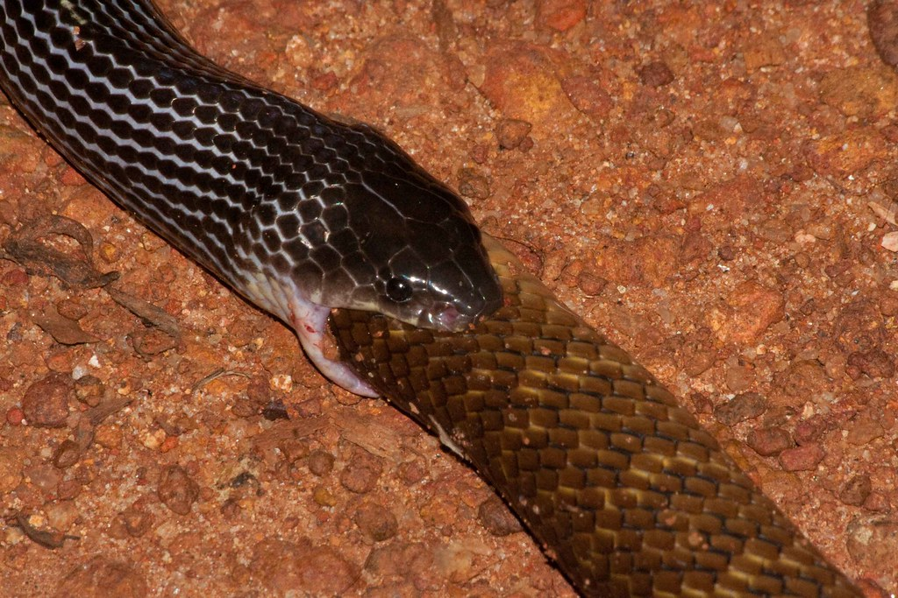

The common krait (Bungarus caeruleus) is one of the most venomous snakes found in the Indian subcontinent.
Recognized by its glossy black or bluish body with narrow white bands, it can grow up to 1.5 meters in length.
Primarily nocturnal and shy, the common krait hides in burrows, under debris, or inside houses during the day.
At night, it becomes more active, hunting other snakes, lizards, and rodents.
Its venom is highly neurotoxic, causing paralysis and respiratory failure if untreated.
Despite its deadly potential, the common krait rarely bites unless provoked, making awareness and caution crucial in areas where it is found.

Physical Characteristics
The common krait (Bungarus caeruleus) has distinctive physical characteristics that make it easily recognizable.
It has a slender, cylindrical body that can grow up to 1.5 meters (5 feet) in length.
The skin is smooth and glossy, typically black or bluish-black, with narrow, white or yellowish bands running across the body, though some individuals may be completely unbanded.
The head is flat, slightly broader than the neck, with small eyes featuring round pupils. The tail is short and tapers abruptly.
The underside of the common krait is usually white or pale yellow./li>
Its smooth scales and shiny appearance, combined with its unique banding pattern, make it one of the most striking snakes in its range.

Habitat
The common krait (Bungarus caeruleus) inhabits a wide range of environments across the Indian subcontinent.
It is commonly found in forests, grasslands, agricultural fields, and near human settlements, often seeking shelter in rodent burrows, under rocks, logs, and debris.
The snake is also known to enter homes, especially during the rainy season, in search of food or shelter.
Common kraits prefer lowland areas but can also be found at moderate elevations.
They are particularly attracted to areas with abundant prey, such as rodents and other snakes.
Being nocturnal, they remain hidden during the day and become active at night, making them more likely to be encountered after dark.
When threatened, it often coils its body and hides its head rather than striking immediately.

Diet and Behavior
The common krait (Bungarus caeruleus) is a nocturnal and shy snake, remaining hidden during the day and becoming active at night to hunt.
It primarily feeds on other snakes, including venomous ones, but also consumes lizards, frogs, and rodents.
Juvenile kraits may also eat insects and small amphibians.
The krait uses its powerful neurotoxic venom to swiftly immobilize prey, ensuring minimal struggle.
Although highly venomous, it is generally non-aggressive and prefers to avoid confrontation, biting only when provoked, especially during its active nighttime hours.

Venom
The venom of the common krait (Bungarus caeruleus) is highly potent and primarily neurotoxic, causing paralysis by blocking nerve signals to muscles, which can lead to respiratory failure if not treated promptly.
The venom also contains beta-bungarotoxins, which damage nerve endings, making recovery difficult even after antivenom administration..
Krait bites are often painless with minimal visible fang marks, leading to delayed treatment.
Early symptoms include abdominal pain, drooping eyelids, slurred speech, and breathing difficulties.
As the venom acts rapidly, respiratory support is often required alongside antivenom.
Without immediate medical care, the bite can be fatal within hours, highlighting the need for urgent treatment.li>